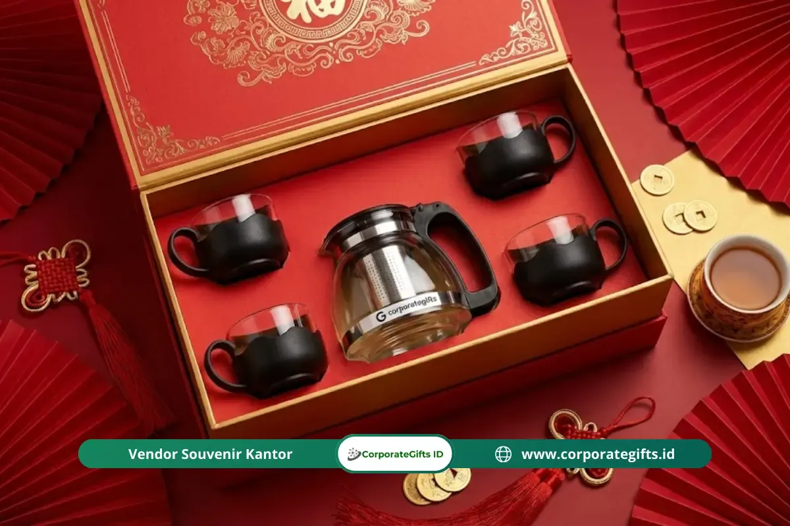

Corporate Gifts ID - Souvenir Imlek 2026 terbaik untuk klien dan karyawan mengarah pada barang fungsional bertema wellness dan keberlanjutan, seperti tea set keramik premium, diffuser aromaterapi, dan tumbler custom. Hadiah ini dikemas dalam nuansa merah-emas serta wajib menghindari jumlah kelipatan angka empat. Panduan ini merangkum etika budaya Tionghoa, tren produk terkini, hingga strategi alokasi anggaran agar pengadaan souvenir Imlek korporat Anda tepat sasaran.
Bayangkan situasi canggung ketika klien atau mitra bisnis penting menerima bingkisan Tahun Baru Imlek yang terkesan asal jadi atau bahkan melanggar pantangan budaya. Di dunia profesional, kesalahan kecil seperti ini bisa berakibat fatal, karena momen Imlek bukan sekadar perayaan pergantian kalender, melainkan kesempatan emas memperkuat guanxi (jaringan relasi bisnis yang saling menguntungkan) yang telah dibangun sepanjang tahun.
Poin Kunci Pengadaan Souvenir Imlek Korporat 2026:
- Makna Simbolis Guanxi: Cinderamata menjadi jembatan penghormatan dan pengikat komitmen kerja sama jangka panjang di tahun yang baru.
- Tren Wellness & Sustainability: Bergeser dari makanan cepat basi menuju produk bernilai guna harian seperti tea set infuser dan diffuser botani.
- Kepatuhan Etika Budaya: Mutlak menghindari angka 4 (simbol sial), jam (simbol batas waktu), dan benda tajam (simbol putus hubungan).
- Presentasi Visual Berkelas: Mengutamakan kotak hardcover bermagnet bernuansa merah tua (maroon) atau emas dengan branding subtil.
Apa Makna Memberikan Souvenir Imlek dalam Dunia Bisnis?
Makna memberikan souvenir Imlek dalam budaya Tionghoa dan relasi bisnis korporat jauh melampaui sekadar pertukaran materi. Souvenir ini adalah simbol doa dan harapan tulus akan kemakmuran (prosperity), kelimpahan rezeki, dan kesehatan bagi penerima di tahun baru.
Dalam konteks korporat, souvenir berfungsi sebagai representasi fisik dari jabat tangan kemitraan. Hadiah yang dipersonalisasi dengan cermat mampu meningkatkan loyalitas dan retensi klien bisnis hingga 30%. Memilih item yang tepat bukan lagi sekadar urusan selera, melainkan instrumen strategi komunikasi bisnis tingkat tinggi.

Executive Tea Set Imlek: teko kaca dengan saringan stainless steel, 4 cangkir elegan (disesuaikan ganjil/genap non-4), dan kotak merah berornamen emas.
Apa Tren Souvenir Imlek 2026?
Tren souvenir Imlek 2026 mengarah pada konsep wellness dan sustainability. Perusahaan kini mulai beralih dari kue keranjang basah yang mudah berjamur ke produk yang lebih tahan lama, higienis, dan bermanfaat bagi rutinitas harian.
Klien korporat modern, terutama dari sektor perbankan, teknologi, dan multinasional, sangat mengapresiasi bingkisan berbahan ramah lingkungan seperti keramik tanpa timbal, kaca borosilikat daur ulang, atau kayu bambu alami. Membagikan produk eco-friendly secara langsung mencerminkan kepedulian perusahaan terhadap masa depan bumi.
Rekomendasi Isi Souvenir Imlek yang Elegan dan Berkesan
Berikut pilihan produk unggulan yang memadukan estetika oriental modern dengan fungsi harian:
1. Tea Set Keramik & Kaca Borosilikat Premium
Teh merupakan elemen fundamental dalam tradisi Tionghoa yang menyimbolkan ketenangan dan harmoni keluarga. Paket tea set dengan aksen lis emas atau motif bunga plum menjadi pilihan prestisius yang tak lekang oleh waktu.
2. Diffuser Elektrik & Minyak Aromaterapi Botani
Mendukung kenyamanan ruang kerja dan rumah melalui aroma menenangkan seperti sandalwood (kayu cendana), jeruk mandarin, dan green tea yang selaras dengan suasana musim semi Tahun Baru Imlek.
3. Set Alat Makan Emas (Gold Cutlery Set)
Warna emas merepresentasikan kemakmuran dan kekayaan. Set sendok, garpu, dan sumpit berbahan stainless steel food-grade dengan lapisan titanium gold finishing sangat fungsional dan awet digunakan bertahun-tahun.
Tabel Panduan Kurasi Souvenir Imlek Berdasarkan Kategori Penerima
Berikut matriks panduan pemilihan paket souvenir Imlek sesuai tingkatan relasi:
| Kategori Penerima | Rekomendasi Paket Souvenir | Nuansa Material & Warna | Kisaran Budget / Pax |
|---|---|---|---|
| Klien VIP & Dewan Direksi | Executive Tea Set Infuser + Daun Teh Oolong Import + Jar Sarang Burung Walet | Keramik Porselen Lis Emas, Hardbox Bludru Merah Maroon | Rp 450.000 - Rp 950.000 |
| Mitra Bisnis & Vendor Strategis | Aromatherapy Ultrasonic Diffuser + Essential Oil Mandarin & Sandalwood + Kue Lapis Legit Artisan | Matte Gold Finish, Kotak Linen Motif Oriental | Rp 250.000 - Rp 450.000 |
| Karyawan Internal Kantor | Smart Tumbler LED Custom Imlek + Set Cutlery Stainless Gold + Angpao E-Wallet Voucher | SUS 304 Red Matte, Kemasan Paper Box Motif Naga/Ular Kayu | Rp 100.000 - Rp 180.000 |
Ide Souvenir Imlek Fungsional untuk Karyawan 2026
Memberikan souvenir Imlek kepada karyawan internal adalah bentuk apresiasi yang mempererat rasa memiliki (sense of belonging). Pilihlah barang yang mendukung produktivitas harian:
- Tumbler Stainless Suhu Edisi Imlek: Membantu karyawan tetap terhidrasi dengan tumbler tahan panas 12 jam berdesain minimalis.
- Powerbank Fast Charging & Desk Organizer: Memudahkan mobilitas kerja karyawan hybrid dengan sentuhan aksen warna merah mewah.
- Voucher Belanja Terintegrasi: Memberikan fleksibilitas bagi karyawan untuk melengkapi kebutuhan belanja hari raya bersama keluarga.
Etika Penting Memberikan Hadiah Imlek (Hindari Blunder Budaya)
Dalam tradisi Tionghoa, tata cara penyerahan dan pemilihan bentuk hadiah memiliki aturan sakral. Hindari 4 kesalahan fatal berikut:
- Hindari Angka 4: Angka 4 (si) berima dengan kata 'mati'. Pastikan jumlah item dalam satu paket tidak berjumlah 4 (misalnya isi 2, 6, atau 8 yang melambangkan keberuntungan tak terputus).
- Pantangan Barang Tertentu: Dilarang memberikan jam meja/dinding (simbol menghitung sisa umur), gunting atau pisau (simbol memutus tali relasi), serta sepatu (simbol berjalan menjauh).
- Aturan Warna Kemasan: Gunakan warna merah merona, merah marun, atau emas. Hindari pembungkus serba putih atau hitam polos karena identik dengan upacara duka cita.
- Menyerahkan dengan Kedua Tangan: Selalu serahkan paket bingkisan menggunakan kedua tangan sambil membungkuk sedikit sebagai bentuk penghormatan tertinggi.
Tips Memilih Kemasan Souvenir Imlek yang Berkelas
Kemasan luar menentukan 70% impresi awal penerima. Tingkatkan nilai estetika hadiah dengan panduan kemasan berikut:
- Hardbox Magnetik Rigid: Struktur kotak yang tebal dan kokoh melindungi isi dari risiko benturan logistik serta memancarkan kesan mewah.
- Aksen Pita Satin Emas / Tali Sutra: Memberikan sentuhan dekoratif oriental yang anggun tanpa terkesan berlebihan.
- Kartu Ucapan Personal Bertinta Emas: Sertakan kartu bertuliskan nama penerima secara personal lengkap dengan ucapan Gong Xi Fa Cai dan doa kemakmuran bersama.
Strategi Mengelola Budget Souvenir Imlek Kantor
Pengadaan souvenir Imlek dapat dilakukan secara efisien tanpa mengurangi mutu melalui 3 strategi pengadaan terencana:
- Sistem Segmentasi (Tiering): Bagi daftar penerima ke dalam kelompok VIP (klien strategis), Reguler (mitra rekanan), dan Internal (staf), lalu alokasikan persentase anggaran terbesar untuk klien prioritas.
- Pemesanan Lebih Awal (H-60 Hari): Melakukan pemesanan sejak awal Desember hingga Januari awal menghindari lonjakan ongkos kargo dan harga bahan baku musiman.
- Pengadaan Grosir Terpadu: Menggabungkan pesanan souvenir karyawan dalam jumlah massal ke vendor resmi seperti CorporateGifts.ID untuk mendapatkan harga pabrik terbaik.
Kesimpulan dan Panduan Konsultasi
Memberikan souvenir Tahun Baru Imlek yang tepat adalah investasi relasional berjangka panjang. Dengan memahami etika budaya, memilih produk fungsional modern, dan mengemasnya secara elegan, perusahaan Anda akan dinilai sebagai mitra bisnis yang profesional, beretika, dan berwawasan luas.
Percayakan pengadaan paket souvenir Imlek kantor Anda kepada CorporateGifts.ID. Kami menyediakan puluhan opsi katalog eksklusif, fasilitas mockup visual gratis, dan jaminan pengiriman aman tepat waktu ke seluruh Indonesia. Ajukan estimasi biaya resmi melalui formulir permintaan penawaran harga sekarang.